Descripción Funcional de Procesos y Guía de Casos de Prueba (QA)
En las operaciones de izaje de alto tonelaje, el ciclo de cobro suele sufrir retrasos debido a la desconexión entre la faena física en terreno y la oficina contable: reportes diarios en papel extraviados, horas mínimas contractuales no conciliadas oportunamente, gastos directos (combustible, peajes y viáticos) que no se imputan a tiempo y autorizaciones comerciales dispersas.
El Circuito Integral (Spec 57) unifica y protege digitalmente este flujo de extremo a extremo, asegurando que ninguna factura se emita sin respaldo técnico verificado ni autorizaciones financieras correspondientes.

Garantiza la captura fidedigna de información directamente en la grúa o camión de apoyo:
Supervisa que las faenas del día anterior queden conciliadas antes del mediodía:
Documento central que consolida los ingresos facturables y los costos reales para calcular el margen de la faena:
EN_REVISION_OPERACIONES.EN_REVISION_CONTABILIDAD.Control estricto de las condiciones comerciales antes de despachar el cobro:
Vinculación final con el sistema contable ERP Laudus:
hes_oc_numero = 'S/OC - ASUME EDP') para no paralizar la facturación.Esta matriz resume los 14 escenarios de prueba ejecutados para certificar el funcionamiento de las reglas de negocio y los candados de seguridad:
| N° | Escenario Evaluado | Actor | Acción Realizada | Regla de Negocio / Candado | Resultado del Sistema | Estado |
|---|---|---|---|---|---|---|
| TC-01 | Bandeja Móvil | Operador | Consulta OTs pendientes en PWA | Separar faenas en curso de servicios ya concluidos | Despliega contador exacto de OTs pendientes y terminadas | ✔ Conforme |
| TC-02 | Candado Cuota | Operador | Intenta 2° report en OT de 1 día | Hard Gate de bloqueo si la cuota de días pactada está agotada | Rechazo HTTP 403: "Operación bloqueada por término de faena" | ✔ Conforme |
| TC-03 | Auditoría SLA | Sistema | Auditoría a las 13:00 hrs Santiago | Identificar reportes del día previo sin validación | Identifica con precisión OTs en mora de revisión | ✔ Conforme |
| TC-04 | Alerta Omnicanal | Sistema | Disparo de notificaciones de mora | Alertar a los responsables de flota y operaciones | WhatsApp y Correos enviados a Yiara Mendoza y Jorge Ponce | ✔ Conforme |
| TC-05 | Contexto ITS | Analista | Abre pantalla de liquidación ITS | Precargar grúa asignada, jornales y tarifas de cotización | Pantalla con jornales, horas reales y tarifas cargadas | ✔ Conforme |
| TC-06 | Guardado ITS | Analista | Guarda jornadas y combustible Copec | Persistencia relacional atómica en base de datos | ITS guardado exitosamente con ID y folio formal | ✔ Conforme |
| TC-07 | FES Paso 1 | Analista | Firma de elaboración con PIN FES | Cifrado SHA-256 de PIN y avance del flujo de firmas | Firma registrada; ITS pasa a EN_REVISION_OPERACIONES |
✔ Conforme |
| TC-08 | FES Paso 2 | Jorge Ponce | V°B° técnico con PIN FES | Validación técnica previa a traspaso contable | Firma registrada; ITS pasa a EN_REVISION_CONTABILIDAD |
✔ Conforme |
| TC-09 | PDF con Anexo | Operaciones | Descarga documento PDF de ITS | Sección 7 obligatoria con firmas canvas y GPS de terreno | PDF compilado con logos GSP, detalle económico y firmas | ✔ Conforme |
| TC-10 | Seguridad Rol | Operador | Intenta alterar tarifas o descuentos en EDP | Segregación de roles: Exclusivo Pamela / Tesorería | Rechazo HTTP 403: "Acceso Denegado: Solo Tesorería" | ✔ Conforme |
| TC-11 | Ajuste Tesorería | Pamela | Aplica descuento comercial pactado | Recálculo automático de netos, IVA y total de EDP | Ajuste guardado con justificación y carátula actualizada | ✔ Conforme |
| TC-12 | Despacho Contado | Tesorería | Firma comercial para cliente Pago Previo | Evitar cobro erróneo a clientes que ya pagaron | Despacho clasificado como Expediente Interno | ✔ Conforme |
| TC-13 | Despacho Crédito | Tesorería | Firma comercial para cliente a Crédito | Despacho respaldado con copia a jefaturas internas | Correo formal despachado con CC a Omar Ghiselini, Contabilidad y Operaciones | ✔ Conforme |
| TC-14 | Cierre Facturación | Facturación | Cierra con opción "S/OC - Asume EDP" | Asumir valor devengado y actualizar estado | OT actualizada a Estado 7 (FACTURADO_CONFORME) | ✔ Conforme |
Para avanzar en la puesta en marcha coordinada entre Grúas San Pablo y LeanGlobal, se sugieren los siguientes pasos:
La contraparte de Grúas San Pablo (Jorge Ponce, Yiara Mendoza, Pamela) puede recorrer las pantallas para validar la fluidez del circuito con datos de faenas reales.
Confirmar los teléfonos móviles y correos corporativos configurados para la auditoría de las 13:00 hrs y evaluar si se requiere incorporar destinatarios adicionales por turno.
Con la conformidad de los 14 casos verificados, el sistema está listo para respaldar la emisión de reportes diarios, ITS y carátulas EDP en la operación diaria.